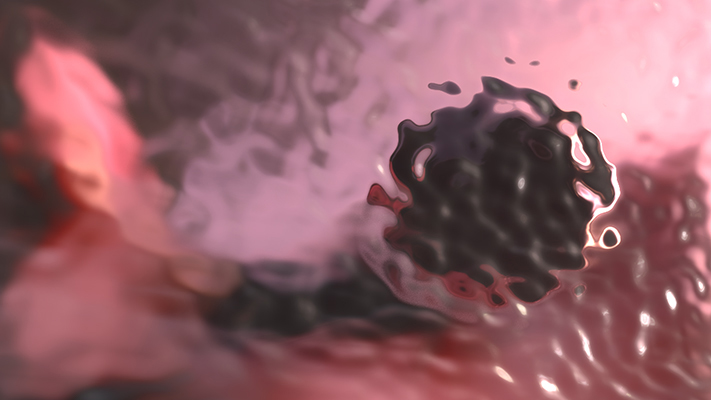
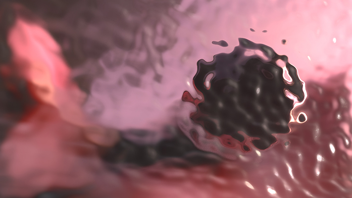
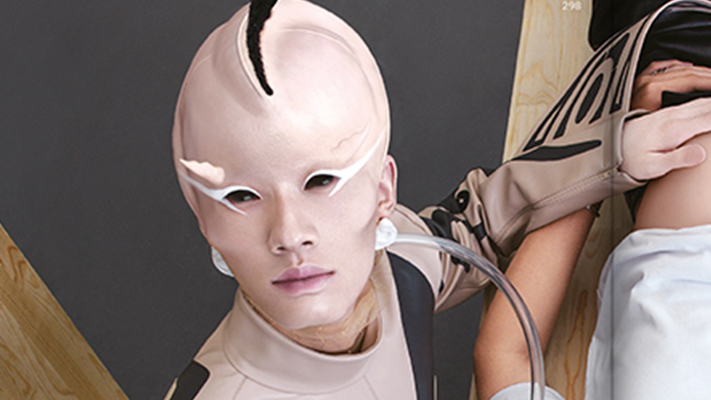
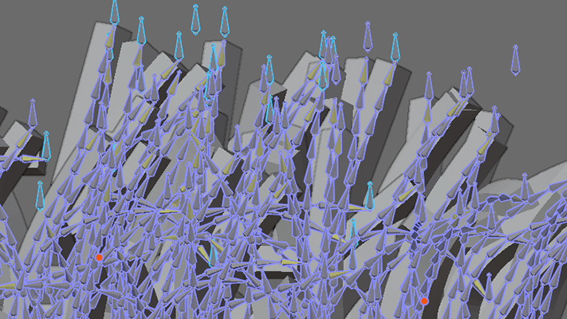
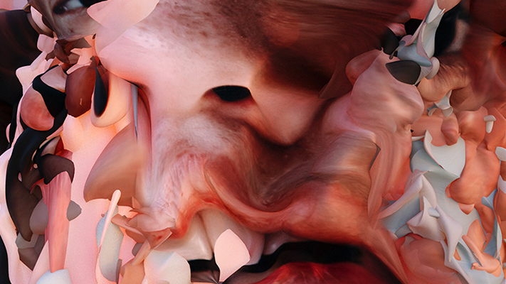
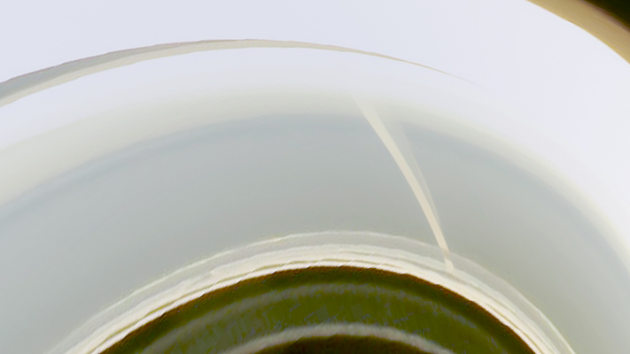

skip
 
 Having spent my youth running around in various game levels, restlessly looking for some hidden passage or the last floating bonus, lost for countless hours in these alternative realities, I have decided to claim back the 3D space that nurtured my teenage dreams and create new worlds of my own.
skip
3d design and layout support for the Alien issue of FuckingYoung! A futuristic, alien like touch was added by creating 3d objects.
Taking inspiration from the great variety of life forms existing here on earth, the aim was to explore the possibilities extraterrestrial life could offer in terms of features.
Strange and often grotesque, these 3d objects bring another level of uncanny to the pages. With and for Studio CordovaCanillas.
skip
 I was commissioned to augment the cover of the art magazine FUKT for the launch of their 17th edition.
Making the best of augmented reality technology, the cover of the contemporary drawing magazine comes alive! Developed for studio Ariane Spanier Design and FUKT Magazine Berlin.
skip
Cognitive distortion is a set of visual researches exploring the same psychologic phenomenon.
An installation named Cognitive lenses is set to display these works on the various sized devices, one might use during a full day of digital activity.
All of this rests on a "light cloud" like table.
This is work in progress.
skip
Electronic scavenger is an interactive installation born from the desire to explore a hypothetical state of deep symbiosis between human and computers set in a post industrial world.
Having completely merged with the organic world, these « biomachines » would evolve to become fully intelligent beings. They would care for the human societies organized around them, and pass on memory to younger generations trough gaming like rituals.
The piece was shown in an exhibition space called "fugitif" in Leipzig: a placenta like structure was set hanging from the ceiling, that hosted an oil bathed computer. One could interact with the installation as the computer was running a video game unfolding a visual narrative.
skip
 Cognitive distortion is a set of visual researches exploring the same psychologic phenomenon.
Cognitive distortion or distorted thinking is the biased inner narratives we sometimes sustain for ourselves. They usually are thoughts that cause individuals to perceive reality inaccurately.
The following series try to investigate this phenomenon born from, slight to major depression, anger and anxiety.
While everything mind related has roots and consequences on the body, the digital works are paired with physical explorations.
skip
I infinite, "je infini" in french, is an installation about interdimensionnal travel under the influence. Develloping the idea that psychonauts are able to explore entire new realms but not without cost.
The interactive film is inpired by "L'innommable" of Samuel Becket where the narration is slowly fading away as we read through. The computer hosting the interactive piece is set on top of magic mushroom farms filled with glowing substrate.
This is work in progress
Romain Thibault is a french visual artist investigating a hybrid world set between the digital and material plane.
Say hello or reach online.
Romain was born in Toulouse southern France in 1989, where he now works as a plastic artist. His production stems from self-initiated experiments, structured by divergent thinking processes.
Set in motion by his investigative personality type and everrenewed curiosity for the fields of biology, philosophy and any law defining our physical and virtual realms.
Romain develops an experimental visual approach that led him to conceive and explore hybrid planes where the digital and the physical completely merge or collide.
All codes, graphic and visual works belong to Romain and its collaborators.